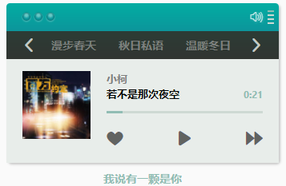
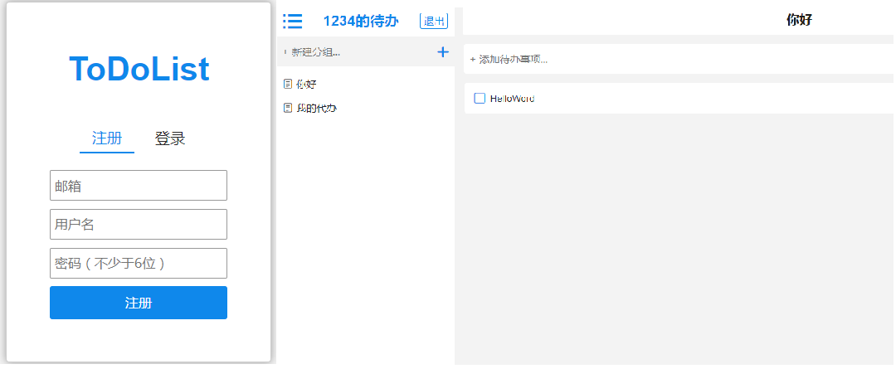
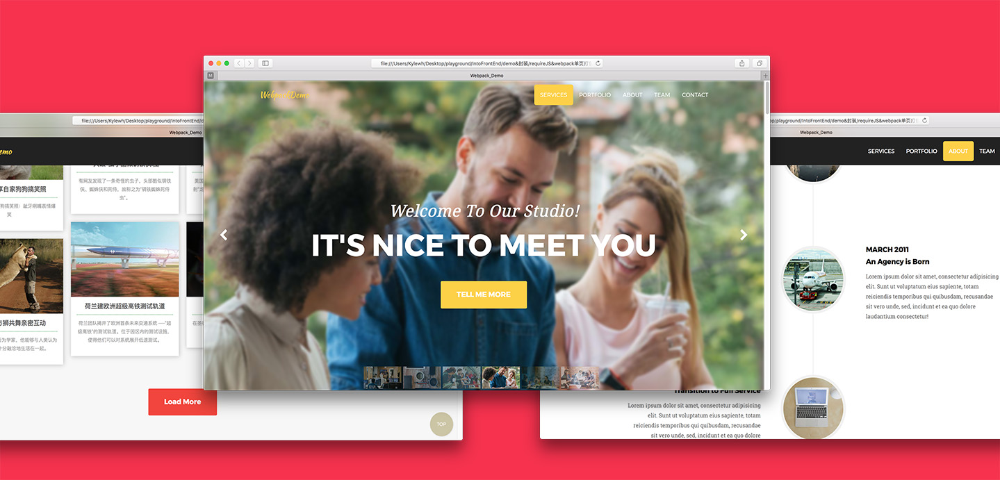

-
- Basic info. 基本信息
- 个人信息: 孙兵见 / 男
- 年龄: 22
- 学历: 本科
- 博客: www.jianshu.com/u/0135bff4a7eb
- GitHub: www.github.com/Risingsbj
-
- Experience. 项目经验
-
My-FM 音乐播放器 源代码 在线预览
一个在线音乐播放器，利用开放音乐API，可在线播放音乐，进行播放、暂停、下一曲、调节音量、跳转播放进度等操作，还可以将当前音乐添加到本地的“喜爱音乐”列表，也可切换播放频道，在播放音乐时歌词根据播放进度自动滚动。
涉及技术：使用 HTML5、jQuery 实现 FM 应用，利用 Ajax 技术通过API请求数据
-
ToDoList 源代码 在线预览
todoList是一个轻量级单页在线待办事项管理应用，支持注册，支持增删改查，云同步，视图切换，事项分类等功能。采用最新技术生态，ES6/ES7语法，追求最佳实践。
涉及技术：整个应用基于 React 框架和 LeanCloud搭建，用到了原生JavaScript和 ES6 等相关技术。
-
组件化商业首页 源代码 在线预览
这个项目是对组件封装以及代码打包的实践.
主要组件包括：轮播、Tab跟踪、AJAX封装、JSONP封装、无限加载、懒加载、回到顶部。对于新闻无限加载部分使用过自己封装的瀑布流插件，由于会产生白边，放弃使用。由于涉及较多dom操作，选择使用jQuery提高开发效率。
整体页面使用webpack打包，也使用了requireJS作为对比，理解CMD&AMD差异。
查看更多封装组件和demo：我是链接
-
一些 Node.js 小程序
-
- Skill. 技能清单
前端
-
熟练掌握HTML(5)、常用CSS(3)和常见布局。具有 平均水准之上 的审美，追求设计的优雅。
-
熟练掌握原生Javascript，掌握重要概念如： 原型， 闭包， 作用域链， ，面向对象， 异步流程控制等。能够根据面向对象思想利用JS/jQuery 封装 常用插件。 熟练使用 ES6及ES7 部分新特性。
-
熟悉React框架，理解重要概念如：生命周期、异步更新、虚拟DOM 等，熟悉组件拆分，理解父子组件的通信，并有相关项目踩坑（发现问题），脱坑（解决问题）的经验。
-
熟悉HTTP协议及浏览器渲染原理，了解前端 性能优化策略。
-
熟悉Yarn & Npm & Git，了解Node.js，熟悉前后端数据交互的实现。
-
熟悉CMD&AMD机制，熟悉Webpack打包，优化手段。
-
追求风格优雅，整洁的代码。